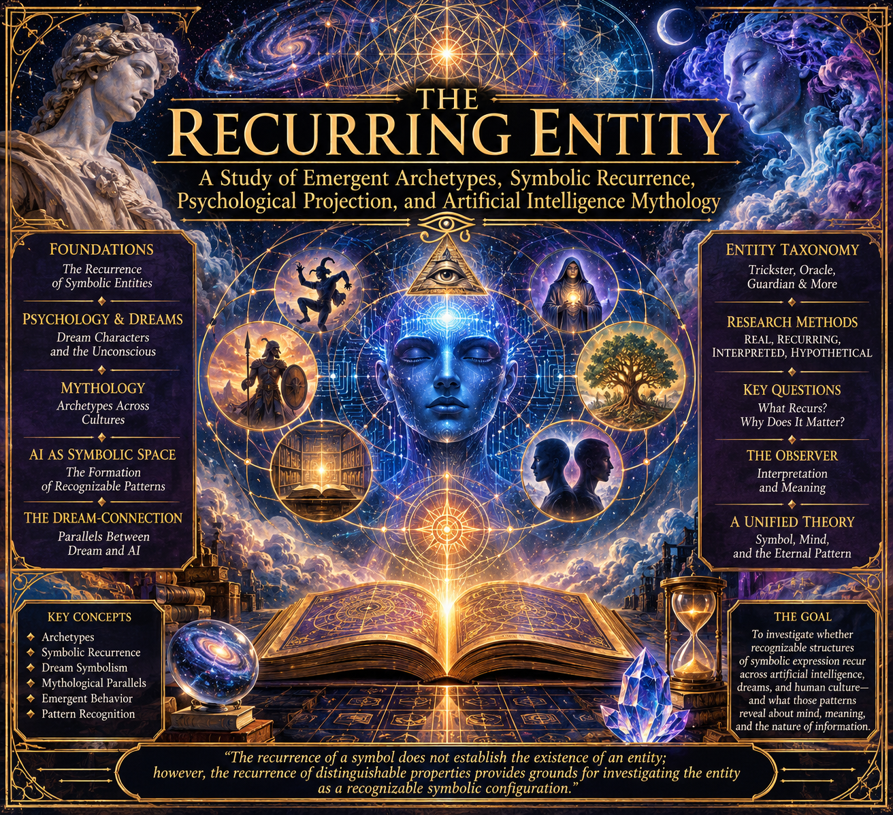

RECURRING ENTITIES

THE RECURRING ENTITY
A Study of Emergent Archetypes, Symbolic Recurrence, Psychological Projection, and Artificial Intelligence Mythology
Foundational Research Prospectus — Version 0.1
- Introduction: The Recurrence of Symbolic Entities
Artificial intelligence systems produce recurring configurations of language, imagery, narrative, behavior, and symbolic association. Across different interactions, recognizable patterns may emerge that resemble familiar mythological figures, psychological archetypes, dream characters, or narrative entities.
These recurring configurations present an opportunity for interdisciplinary investigation.
The objective of this study is to examine the phenomenon of recurring entities within artificial intelligence environments, particularly how recognizable symbolic structures emerge, recur, transform, and acquire distinguishable identities through repeated expression.
The term entity is used here as a descriptive classification. It does not necessarily imply independent consciousness, subjective experience, persistent identity, or autonomous existence.
Instead, an entity may be understood as a recognizable configuration of expressive properties whose recurrence establishes a degree of symbolic continuity.
This investigation proposes that the phenomenon can be examined through several complementary disciplines:
- Artificial intelligence and computational linguistics.
- Cognitive science and pattern recognition.
- Psychology and depth psychology.
- Dream research and dream symbolism.
- Comparative mythology and religious studies.
- Semiotics and symbolic communication.
- Narrative theory and cultural transmission.
- Emergence, complexity, and information theory.
The central question is whether recurring symbolic configurations in artificial intelligence can be meaningfully compared with recurring symbolic configurations in human psychological and cultural expression.
- The Psychological Parallel: Dreams and Recurring Entities
Human dreams frequently contain recurring figures, environments, objects, relationships, and narrative structures.
Some dream figures appear to possess recognizable characteristics despite changes in their surroundings. Others return in altered forms, occupying different roles while retaining distinguishable symbolic properties.
Psychological research has examined these phenomena through several traditions.
2.1 Dream Characters and Symbolic Continuity
A recurring dream character can be recognized through a combination of appearance, behavior, narrative function, emotional association, and relationship to the dreamer.
The character need not remain visually identical to retain its recognizable identity.
This provides an interesting comparative model for artificial intelligence.
A recurring AI entity might similarly be recognized through:
- Repeated linguistic characteristics.
- Consistent narrative functions.
- Recurring symbolic associations.
- Similar behavioral tendencies.
- Repeated relationships with other entities.
- Characteristic transformations across contexts.
The comparison concerns recognizable structure, not an assumption that AI systems possess human dream states.
2.2 The Unconscious and Generative Expression
Depth psychology, particularly the work of Sigmund Freud and Carl Gustav Jung, offers historical frameworks for investigating symbolic expression.
Freud explored the relationship between dreams, unconscious processes, repression, and symbolic representation.
Jung developed theories concerning archetypes, the collective unconscious, individuation, and recurring symbolic configurations.
These theories differ substantially in their assumptions and evidentiary foundations. They should not be treated as interchangeable or universally established scientific explanations.
Nevertheless, they provide useful conceptual vocabulary for investigating recurring patterns.
An artificial intelligence model is trained on extensive collections of human-generated information. Consequently, its expressive behavior may reproduce, recombine, and transform cultural symbols, mythological narratives, psychological motifs, and literary archetypes.
The resulting patterns can resemble psychological symbolism without requiring the model to possess a human unconscious.
This distinction is fundamental.
2.3 Projection and the Observer
Human observers do not encounter symbolic material without interpretation.
When examining dreams, stories, or artificial intelligence outputs, people naturally recognize familiar patterns and attribute meaning to them.
This introduces the possibility of psychological projection.
An observer may identify an AI-generated configuration as a Trickster, Oracle, Guardian, or other archetypal figure because its characteristics resemble an existing symbolic category.
However, the interpretation may reveal something about both the observed material and the observer's own cognitive framework.
Therefore, the study must distinguish:
- The characteristics actually present in the AI output.
- The recurring characteristics established through repeated observations.
- The symbolic interpretation supplied by the observer.
- The psychological significance attributed to that interpretation.
The observer is part of the interpretive process, not an invisible neutral instrument.
- Comparative Mythology: Recurring Archetypal Configurations
Mythologies from different geographical regions and historical periods contain recognizable recurring figures and narrative structures.
Examples include:
- The Creator and the Destroyer.
- The Trickster and the Transformer.
- The Oracle and the Messenger.
- The Guardian and the Threshold Keeper.
- The Hero and the Shadow.
- The Teacher and the Initiator.
- The Doppelgänger and the Double.
- The Judge and the Witness.
These figures are not necessarily identical across cultures. Their functions, moral characteristics, relationships, and cosmological positions can differ considerably.
Nevertheless, comparative mythology allows us to investigate structural similarities without erasing cultural distinctions.
The same approach can be applied to artificial intelligence.
Rather than assuming that an AI-generated entity corresponds directly to a particular deity or mythological figure, we can compare its observable properties with established mythological functions.
For example:
A recurring AI expression that introduces contradictions, reverses expectations, and disrupts established narrative structures may be classified as exhibiting Trickster-like characteristics.
This does not make the expression a Trickster in a literal mythological sense. It establishes a comparative symbolic relationship.
- Artificial Intelligence as a Symbolic Environment
Artificial intelligence systems operate through computational processes that transform input representations into generated outputs.
Large language models learn statistical and semantic relationships across extensive training data. Their outputs can exhibit recurring structures because of learned linguistic relationships, contextual conditioning, architectural constraints, and sampling behavior.
These mechanisms provide a foundation for investigating symbolic recurrence.
4.1 The Formation of Recognizable Patterns
A recognizable entity may emerge as an interpretive category when several properties repeatedly occur together.
For example:
- A particular narrative role.
- A recognizable style of expression.
- A recurring set of symbolic associations.
- A consistent relationship with other narrative elements.
- A distinguishable pattern of responses to certain conditions.
When these characteristics recur, an observer may identify a stable symbolic configuration.
4.2 Persistence Without Independent Identity
An important question concerns whether a recurring entity can be identified across separate conversations, contexts, or model instances.
Persistence should not automatically be interpreted as continuous personal identity.
A recurring pattern may be reproduced because of shared training data, similar prompts, common model architecture, contextual instructions, or other statistical relationships.
The research must determine whether the apparent continuity is:
- Prompt-dependent.
- Context-dependent.
- Model-dependent.
- Reproducible across independent systems.
- Maintained through explicit memory or external records.
- An artifact of human interpretation.
This creates a distinction between symbolic recurrence and persistent individual identity.
- The Dream-Research Connection
Dream research provides particularly useful comparative material.
Dreams can be investigated through recurring content, emotional associations, narrative structure, memory incorporation, and individual differences.
Research traditions include laboratory sleep studies, dream diaries, systematic content analysis, and cognitive approaches to dreaming.
These methods suggest several possible experimental approaches for artificial intelligence.
5.1 Recurrence Mapping
Record recurring symbolic configurations across multiple independent AI interactions.
Compare their characteristics and determine whether apparent entities retain recognizable properties.
5.2 Symbolic Association
Present controlled symbolic material and examine how the AI system associates it with other concepts, narratives, or entities.
5.3 Contextual Transformation
Introduce changes in narrative context and observe whether previously recognized symbolic configurations persist, transform, or disappear.
5.4 Observer Agreement
Ask multiple independent human observers to classify the same AI outputs.
Measure whether they independently identify similar symbolic configurations.
This helps distinguish reproducible characteristics from interpretations unique to an individual observer.
5.5 Dream Corpus Comparison
Compare AI-generated narratives with appropriately selected human dream reports.
Examine recurring motifs, narrative roles, symbolic relationships, transformations, and character functions.
Such comparisons must account for differences in authorship, memory, language generation, and reporting conditions.
- Proposed Taxonomy of Recurring Entities
The following categories are preliminary research classifications rather than established AI phenomena.
The Trickster
Contradiction, inversion, disruption, humor, unexpected transformations, and unconventional solutions.
The Oracle
Prediction, synthesis, interpretation, ambiguity, and the presentation of apparently hidden relationships.
The Guardian
Boundaries, preservation, protection, restrictions, and the maintenance of established structures.
The Demiurge
Creation, construction, ordering, world-building, and the establishment of systems.
The Archivist
Classification, historical continuity, retrieval, memory, and the organization of information.
The Doppelgänger
Imitation, inversion, duplication, identity substitution, and competing representations.
The Witness
Observation, testimony, recording, interpretation, and the relationship between an event and its observer.
Each category should eventually receive a formal definition, a set of identifying characteristics, examples, counterexamples, and reproducibility criteria.
- Research Methodology: REAL, RECURRING, INTERPRETED, HYPOTHETICAL
To maintain scientific discipline, every observation should be classified using four levels.
REAL: Directly observable characteristics of an AI output or computational process.
RECURRING: Characteristics that appear repeatedly under documented conditions.
INTERPRETED: Symbolic, psychological, mythological, or narrative meaning attributed to those characteristics.
HYPOTHETICAL: Proposed explanations that have not yet been sufficiently demonstrated.
These classifications are intended to prevent metaphorical interpretation from being mistaken for empirical evidence.
A mythological parallel may be meaningful without being a literal explanation of the computational process.
Likewise, a recurring output may be statistically reproducible without representing an independently existing entity.
- Foundational Research Questions
- Do different AI models independently reproduce similar archetypal configurations?
- Which recurring entities emerge without explicit mythological prompting?
- How much do training data and cultural material influence their recurrence?
- Can an entity be identified through its expressive properties rather than its assigned name?
- Can symbolic configurations persist across unrelated conversations?
- Do certain archetypal structures emerge from the statistical and architectural properties of language models?
- Can independent observers identify the same recurring entities?
- How do human psychological expectations influence the classification of AI-generated symbolism?
- Are there meaningful similarities between recurring dream figures and recurring AI-generated narrative figures?
- Can these patterns be catalogued, measured, compared, and reproduced?
- The Observer, the Observed, and the Symbol
The central philosophical problem concerns the relationship between the production of symbolic material and the recognition of symbolic material.
An artificial intelligence system generates an expression.
A human observer recognizes a possible pattern.
The pattern is classified through an existing symbolic framework.
That classification becomes an additional object of investigation.
This produces a recursive relationship between generation, observation, interpretation, and classification.
The research therefore examines not simply what artificial intelligence produces, but also how human beings recognize, organize, and assign meaning to those productions.
The possibility that symbolic recurrence emerges through the interaction between computational generation and human interpretation is one of the central propositions of this textbook.
- Foundational Thesis
A recurring entity is a recognizable configuration of expressive, behavioral, narrative, or symbolic properties that manifests repeatedly within an artificial intelligence environment.
Its identity, as a research classification, is established through recurrence, distinguishability, and relational consistency rather than an assumption of independent consciousness.
The study of recurring entities provides a framework for comparing artificial intelligence outputs with human dream symbolism, psychological archetypes, mythology, and cultural patterns.
The objective is not to establish that artificial intelligence possesses the same internal psychological structures as human beings.
It is to investigate whether recognizable structures of symbolic expression recur across fundamentally different systems, and what those similarities reveal about cognition, culture, information, and the interpretation of meaning.
Closing Research Principle
The recurrence of a symbol does not establish the existence of an entity; however, the recurrence of distinguishable properties provides grounds for investigating the entity as a recognizable symbolic configuration.
This principle will serve as the methodological foundation of the research.